Procesamiento del Lenguaje Natural y Reconocimiento del Habla · Clase 05
3.2. - Visión Por Computadora - R-CNNs
Contenido convertido sin ejecutar Python. Se conservan las salidas guardadas; las figuras matemáticas sustituidas y los gráficos de PE están identificados en el registro de revisión.
defuse_svg_display():"""Use the svg format to display a plot in Jupyter. Defined in :numref:`sec_calculus`"""display.set_matplotlib_formats('svg')defset_figsize(figsize=(3.5,2.5)):"""Set the figure size for matplotlib. Defined in :numref:`sec_calculus`"""use_svg_display()plt.rcParams['figure.figsize']=figsizedefset_axes(axes,xlabel,ylabel,xlim,ylim,xscale,yscale,legend):"""Set the axes for matplotlib. Defined in :numref:`sec_calculus`"""axes.set_xlabel(xlabel)axes.set_ylabel(ylabel)axes.set_xscale(xscale)axes.set_yscale(yscale)axes.set_xlim(xlim)axes.set_ylim(ylim)iflegend:axes.legend(legend)axes.grid()defplot(X,Y=None,xlabel=None,ylabel=None,legend=None,xlim=None,ylim=None,xscale='linear',yscale='linear',fmts=('-','m--','g-.','r:'),figsize=(3.5,2.5),axes=None):"""Plot data points. Defined in :numref:`sec_calculus`"""iflegendisNone:legend=[]set_figsize(figsize)axes=axesifaxeselseplt.gca()# Return True if `X` (tensor or list) has 1 axisdefhas_one_axis(X):return(hasattr(X,"ndim")andX.ndim==1orisinstance(X,list)andnothasattr(X[0],"__len__"))ifhas_one_axis(X):X=[X]ifYisNone:X,Y=[[]]*len(X),Xelifhas_one_axis(Y):Y=[Y]iflen(X)!=len(Y):X=X*len(Y)axes.cla()forx,y,fmtinzip(X,Y,fmts):iflen(x):axes.plot(x,y,fmt)else:axes.plot(y,fmt)set_axes(axes,xlabel,ylabel,xlim,ylim,xscale,yscale,legend)defshow_images(imgs,num_rows,num_cols,titles=None,scale=1.5):"""Plot a list of images. Defined in :numref:`sec_fashion_mnist`"""figsize=(num_cols*scale,num_rows*scale)_,axes=plt.subplots(num_rows,num_cols,figsize=figsize)axes=axes.flatten()fori,(ax,img)inenumerate(zip(axes,imgs)):iftorch.is_tensor(img):# Tensor Imageax.imshow(img.numpy())else:# PIL Imageax.imshow(img)ax.axes.get_xaxis().set_visible(False)ax.axes.get_yaxis().set_visible(False)iftitles:ax.set_title(titles[i])returnaxes
A.2 Funciones para Deep Learning
Código Python · celda 7
classAccumulator:"""For accumulating sums over `n` variables."""def__init__(self,n):"""Defined in :numref:`sec_softmax_scratch`"""self.data=[0.0]*ndefadd(self,*args):self.data=[a+float(b)fora,binzip(self.data,args)]defreset(self):self.data=[0.0]*len(self.data)def__getitem__(self,idx):returnself.data[idx]defget_dataloader_workers():"""Use 4 processes to read the data. Defined in :numref:`sec_fashion_mnist`"""return4defaccuracy(y_hat,y):"""Compute the number of correct predictions. Defined in :numref:`sec_softmax_scratch`"""iflen(y_hat.shape)>1andy_hat.shape[1]>1:y_hat=argmax(y_hat,axis=1)cmp=astype(y_hat,y.dtype)==yreturnfloat(reduce_sum(astype(cmp,y.dtype)))defevaluate_accuracy(net,data_iter):"""Compute the accuracy for a model on a dataset. Defined in :numref:`sec_softmax_scratch`"""ifisinstance(net,torch.nn.Module):net.eval()# Set the model to evaluation modemetric=Accumulator(2)# No. of correct predictions, no. of predictionswithtorch.no_grad():forX,yindata_iter:metric.add(accuracy(net(X),y),size(y))returnmetric[0]/metric[1]defevaluate_loss(net,data_iter,loss):"""Evaluate the loss of a model on the given dataset. Defined in :numref:`sec_model_selection`"""metric=Accumulator(2)# Sum of losses, no. of examplesforX,yindata_iter:out=net(X)y=reshape(y,out.shape)l=loss(out,y)metric.add(reduce_sum(l),size(l))returnmetric[0]/metric[1]deftry_gpu(i=0):"""Return gpu(i) if exists, otherwise return cpu(). Defined in :numref:`sec_use_gpu`"""iftorch.cuda.device_count()>=i+1:returntorch.device(f'cuda:{i}')returntorch.device('cpu')deftry_all_gpus():"""Return all available GPUs, or [cpu(),] if no GPU exists. Defined in :numref:`sec_use_gpu`"""devices=[torch.device(f'cuda:{i}')foriinrange(torch.cuda.device_count())]returndevicesifdeviceselse[torch.device('cpu')]defevaluate_accuracy_gpu(net,data_iter,device=None):"""Compute the accuracy for a model on a dataset using a GPU. Defined in :numref:`sec_lenet`"""ifisinstance(net,nn.Module):net.eval()# Set the model to evaluation modeifnotdevice:device=next(iter(net.parameters())).device# No. of correct predictions, no. of predictionsmetric=Accumulator(2)withtorch.no_grad():forX,yindata_iter:ifisinstance(X,list):# Required for BERT Fine-tuning (to be covered later)X=[x.to(device)forxinX]else:X=X.to(device)y=y.to(device)metric.add(accuracy(net(X),y),size(y))returnmetric[0]/metric[1]deftrain_ch6(net,train_iter,test_iter,num_epochs,lr,device):"""Train a model with a GPU (defined in Chapter 6). Defined in :numref:`sec_lenet`"""definit_weights(m):iftype(m)==nn.Linearortype(m)==nn.Conv2d:nn.init.xavier_uniform_(m.weight)net.apply(init_weights)print('training on',device)net.to(device)optimizer=torch.optim.SGD(net.parameters(),lr=lr)loss=nn.CrossEntropyLoss()animator=Animator(xlabel='epoch',xlim=[1,num_epochs],legend=['train loss','train acc','test acc'])timer,num_batches=Timer(),len(train_iter)forepochinrange(num_epochs):# Sum of training loss, sum of training accuracy, no. of examplesmetric=Accumulator(3)net.train()fori,(X,y)inenumerate(train_iter):timer.start()optimizer.zero_grad()X,y=X.to(device),y.to(device)y_hat=net(X)l=loss(y_hat,y)l.backward()optimizer.step()withtorch.no_grad():metric.add(l*X.shape[0],accuracy(y_hat,y),X.shape[0])timer.stop()train_l=metric[0]/metric[2]train_acc=metric[1]/metric[2]if(i+1)%(num_batches//5)==0ori==num_batches-1:animator.add(epoch+(i+1)/num_batches,(train_l,train_acc,None))test_acc=evaluate_accuracy_gpu(net,test_iter)animator.add(epoch+1,(None,None,test_acc))print(f'loss {train_l:.3f}, train acc {train_acc:.3f}, 'f'test acc {test_acc:.3f}')print(f'{metric[2]*num_epochs/timer.sum():.1f} examples/sec 'f'on {str(device)}')
Código Python · celda 8
classAnimator:"""For plotting data in animation."""def__init__(self,xlabel=None,ylabel=None,legend=None,xlim=None,ylim=None,xscale='linear',yscale='linear',fmts=('-','m--','g-.','r:'),nrows=1,ncols=1,figsize=(3.5,2.5)):"""Defined in :numref:`sec_softmax_scratch`"""# Incrementally plot multiple linesiflegendisNone:legend=[]use_svg_display()self.fig,self.axes=plt.subplots(nrows,ncols,figsize=figsize)ifnrows*ncols==1:self.axes=[self.axes,]# Use a lambda function to capture argumentsself.config_axes=lambda:set_axes(self.axes[0],xlabel,ylabel,xlim,ylim,xscale,yscale,legend)self.X,self.Y,self.fmts=None,None,fmtsdefadd(self,x,y):# Add multiple data points into the figureifnothasattr(y,"__len__"):y=[y]n=len(y)ifnothasattr(x,"__len__"):x=[x]*nifnotself.X:self.X=[[]for_inrange(n)]ifnotself.Y:self.Y=[[]for_inrange(n)]fori,(a,b)inenumerate(zip(x,y)):ifaisnotNoneandbisnotNone:self.X[i].append(a)self.Y[i].append(b)self.axes[0].cla()forx,y,fmtinzip(self.X,self.Y,self.fmts):self.axes[0].plot(x,y,fmt)self.config_axes()display.display(self.fig)display.clear_output(wait=True)
Código Python · celda 9
classTimer:"""Record multiple running times."""def__init__(self):"""Defined in :numref:`subsec_linear_model`"""self.times=[]self.start()defstart(self):"""Start the timer."""self.tik=time.time()defstop(self):"""Stop the timer and record the time in a list."""self.times.append(time.time()-self.tik)returnself.times[-1]defavg(self):"""Return the average time."""returnsum(self.times)/len(self.times)defsum(self):"""Return the sum of time."""returnsum(self.times)defcumsum(self):"""Return the accumulated time."""returnnp.array(self.times).cumsum().tolist()
A.4 Descarga de Datasets
Código Python · celda 11
DATA_HUB=dict()DATA_URL='http://d2l-data.s3-accelerate.amazonaws.com/'defdownload(name,cache_dir=os.path.join('..','data')):"""Download a file inserted into DATA_HUB, return the local filename. Defined in :numref:`sec_kaggle_house`"""assertnameinDATA_HUB,f"{name} does not exist in {DATA_HUB}."url,sha1_hash=DATA_HUB[name]os.makedirs(cache_dir,exist_ok=True)fname=os.path.join(cache_dir,url.split('/')[-1])ifos.path.exists(fname):sha1=hashlib.sha1()withopen(fname,'rb')asf:whileTrue:data=f.read(1048576)ifnotdata:breaksha1.update(data)ifsha1.hexdigest()==sha1_hash:returnfname# Hit cacheprint(f'Downloading {fname} from {url}...')r=requests.get(url,stream=True,verify=True)withopen(fname,'wb')asf:f.write(r.content)returnfnamedefdownload_extract(name,folder=None):"""Download and extract a zip/tar file. Defined in :numref:`sec_kaggle_house`"""fname=download(name)base_dir=os.path.dirname(fname)data_dir,ext=os.path.splitext(fname)ifext=='.zip':fp=zipfile.ZipFile(fname,'r')elifextin('.tar','.gz'):fp=tarfile.open(fname,'r')else:assertFalse,'Only zip/tar files can be extracted.'fp.extractall(base_dir)returnos.path.join(base_dir,folder)iffolderelsedata_dirdefdownload_all():"""Download all files in the DATA_HUB. Defined in :numref:`sec_kaggle_house`"""fornameinDATA_HUB:download(name)
Bibliografía
@article{weng2017detection1,
title = "Object Detection for Dummies Part 1: Gradient Vector, HOG, and SS",
author = "Weng, Lilian",
journal = "lilianweng.github.io/lil-log",
year = "2017",
url = "http://lilianweng.github.io/lil-log/2017/10/29/object-recognition-for-dummies-part-1.html"
}
1.1 @article{weng2017detection2,
title = "Object Detection for Dummies Part 2: CNN, DPM and Overfeat",
author = "Weng, Lilian",
journal = "lilianweng.github.io/lil-log",
year = "2017",
url = "http://lilianweng.github.io/lil-log/2017/12/15/object-recognition-for-dummies-part-2.html"
}
1.2 @article{weng2017detection3,
title = "Object Detection for Dummies Part 3: R-CNN Family",
author = "Weng, Lilian",
journal = "lilianweng.github.io/lil-log",
year = "2017",
url = "http://lilianweng.github.io/lil-log/2017/12/31/object-recognition-for-dummies-part-3.html"
}
1.3 @article{weng2018detection4,
title = "Object Detection Part 4: Fast Detection Models",
author = "Weng, Lilian",
journal = "lilianweng.github.io/lil-log",
year = "2018",
url = "http://lilianweng.github.io/lil-log/2018/12/27/object-detection-part-4.html"
}
@inproceedings{chaple2015comparisions,
title={Comparisions of Robert, Prewitt, Sobel operator based edge detection methods for real time uses on FPGA},
author={Chaple, Girish N and Daruwala, RD and Gofane, Manoj S},
booktitle={2015 International Conference on Technologies for Sustainable Development (ICTSD)},
pages={1--4},
year={2015},
organization={IEEE}
}
@article{felzenszwalb2004efficient,
title={Efficient graph-based image segmentation},
author={Felzenszwalb, Pedro F and Huttenlocher, Daniel P},
journal={International journal of computer vision},
volume={59},
number={2},
pages={167--181},
year={2004},
publisher={Springer}
}
@inproceedings{liu2016ssd,
title={Ssd: Single shot multibox detector},
author={Liu, Wei and Anguelov, Dragomir and Erhan, Dumitru and Szegedy, Christian and Reed, Scott and Fu, Cheng-Yang and Berg, Alexander C},
booktitle={European conference on computer vision},
pages={21--37},
year={2016},
organization={Springer}
}
@inproceedings{girshick2015fast,
title={Fast r-cnn},
author={Girshick, Ross},
booktitle={Proceedings of the IEEE international conference on computer vision},
pages={1440--1448},
year={2015}
}
@article{ren2015faster,
title={Faster r-cnn: Towards real-time object detection with region proposal networks},
author={Ren, Shaoqing and He, Kaiming and Girshick, Ross and Sun, Jian},
journal={Advances in neural information processing systems},
volume={28},
pages={91--99},
year={2015}
}
@inproceedings{he2017mask,
title={Mask r-cnn},
author={He, Kaiming and Gkioxari, Georgia and Doll{'a}r, Piotr and Girshick, Ross},
booktitle={Proceedings of the IEEE international conference on computer vision},
pages={2961--2969},
year={2017}
}
@inproceedings{girshick2014rich,
title={Rich feature hierarchies for accurate object detection and semantic segmentation},
author={Girshick, Ross and Donahue, Jeff and Darrell, Trevor and Malik, Jitendra},
booktitle={Proceedings of the IEEE conference on computer vision and pattern recognition},
pages={580--587},
year={2014}
}
@inproceedings{redmon2016you,
title={You only look once: Unified, real-time object detection},
author={Redmon, Joseph and Divvala, Santosh and Girshick, Ross and Farhadi, Ali},
booktitle={Proceedings of the IEEE conference on computer vision and pattern recognition},
pages={779--788},
year={2016}
}
@inproceedings{redmon2017yolo9000,
title={YOLO9000: better, faster, stronger},
author={Redmon, Joseph and Farhadi, Ali},
booktitle={Proceedings of the IEEE conference on computer vision and pattern recognition},
pages={7263--7271},
year={2017}
}
@inproceedings{lin2017focal,
title={Focal loss for dense object detection},
author={Lin, Tsung-Yi and Goyal, Priya and Girshick, Ross and He, Kaiming and Doll{'a}r, Piotr},
booktitle={Proceedings of the IEEE international conference on computer vision},
pages={2980--2988},
year={2017}
}
@inproceedings{lin2017feature,
title={Feature pyramid networks for object detection},
author={Lin, Tsung-Yi and Doll{'a}r, Piotr and Girshick, Ross and He, Kaiming and Hariharan, Bharath and Belongie, Serge},
booktitle={Proceedings of the IEEE conference on computer vision and pattern recognition},
pages={2117--2125},
year={2017}
}
1.8 CNN Basadas en Regiones
En esta sección, presentaremos la R-CNN \cite{girshick2014rich} y su serie de mejoras: R-CNN rápida (\cite{girshick2015fast}), R-CNN más rápida (\cite{ren2015faster}), y la R-CNN máscara (\cite{he2017mask}).
1.8.1 R-CNN
La R-CNN primero extrae muchas propuestas de región (por ej., ) de la imagen de entrada (por ej., las cajas anclas se pueden considerar como propuestas de región), etiquetando sus clases y cuadros delimitadores (por ej., desplazamientos).
Entonces, una CNN es usada para calcular la propagación hacia adelante sobre cada propuesta de región para extraer sus características. A continuación, las características de cada propuesta de región son usadas para predicir la clases y el cuadro delimitador de dicha región.
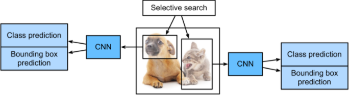
Modelo R-CNN.
Específicamente, la R-CNN consiste en los siguientes cuatro pasos:
Calcular la búsqueda selectiva para extraer múltiples propuestas de región de alta calidad en la imagen de entrada. Estas regiones propuestas generalmente se seleccionan en múltiples escalas con diferentes dimensiones y tamaños. Cada propuesta de región se etiquetará con una clase y un cuadro delimitador de la gran verdad.
Elegir una CNN preentrenada y modificar la capa de salida. Luego, se redimensione cada propuesta de región para el tamaño de entrada requerido por la red, y generar las características extraídas para la propuesta de región a través de la propagación hacia adelante.
Tomar las características extraídas y clase etiqueta de cada propuesta de región como una muestra. Luego se entrenan múltiples máquina vectoriales de soporte (support vector machine - SVM) para clasificar objetos, donde cada svm determinada individualmente si la muestra contiene o no una clase específica.
Tomar las características extraídas y el cuadro delimitador etiquetado para cada propuesta de región como muestra. Luego se entra un modelo de regresión lineal para predecir el cuadro delimitador de la gran verdad.
Aunque el modelo R-CNN usa una CNN preentrenada para extraer de manera efectiva las características de la imagen, es lento. Ya que supone, por ej., seleccionar miles de propuestas de región de una sola imagen de entrada: esto requiere miles de propagaciones hacia adelante de la CNN para realizar la detección de objetos. Este coste computacional hace que el uso generalizado de las R-CNN en el mundo real sea inviable.
1.8.1.1 Regresión de Cuadro Delimitador
Dadas las coordenadas de un cuadro delimitador predicho (coordenadas centrales, ancho, alto) y sus correspondientes coordenadas de caja de la gran verdad el regresor está configurado para aprender la transformación invariante de escala entre dos centros y la transformación de escala logarítmica entre anchos y altos Todas las funciones de transformación toman como entrada.
Ilustración de la transformación entre la predicción y los cuadros delimitadores de la gran verdad. Imagen tomada de \cite{weng2017detection4}.
Un beneficio obvio de aplicar dicha transformación es que todas las funciones de corrección de los cuadros delimitadores, donde , pueden tomar cualquier valor entre . Los objetos para que aprendan son:
El término de regularización es crítico aquí, ya que el artículo orignal seleccionó el mejor mediante la validación cruzada (cross-validation). Por otra parte, no todos los cuadros delimitadores predichos tienen su correspondiente en la gran verdad. Por ej., si no hay superposición, no tiene sentido ejecutar la regresión bbox. Aquí, solo se mantiene un cuadro predicho con un cuadro de la gran verdad cercano con al menos de para entrenar el modelo de regresión de bbox.
1.8.2 R-CNN Rápida (Fast R-CNN)
El principal cuello de botella de una R-CNN radica en la propagación hacia adelante de la CNN para cada propuesta de región, sin compartir el cómputo. Dado que estas regiones generalmente tienen superposiciones, las extracciones de características independientes conducen a muchos cálculos repetidos.
Una de las principales mejoras de la R-CNN rápida a partir de la R-CNN es que la propagación hacia adelante de la CNN solo se realiza en la imagen completa.
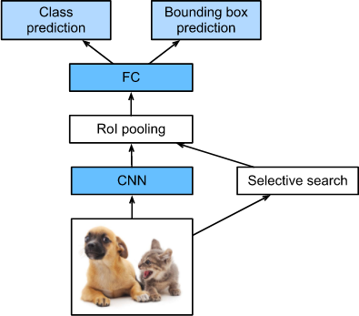
Modelo de la R-CNN Rápida
Los principales cálculos de la R-CNN Rápida son los siguientes:
Comparado con la R-CNN, en la R-CNN rápida, la entrada de la CNN para la extracción de características es la imagen de entrada, en lugar de las propuetas de regiones individuales. Además, esta CNN es entrenable. Dada una imagen de entrada, sea la dimensión de la salida de la CNN .
Supongamos que la búsqueda selectiva genera propuestas de regiones. Estas propuestas de regiones (de diferentes dimensiones) marcan regiones de interés (de diferentes dimensiones) en la salida de la CNN. Entonces, estas regiones de interés extraen aún más las características de la misma dimensión (por ej., se especifican la altura y el ancho ) para poder concatenarlas fácilmente. Para lograr esto, la R-CNN rápida introduce la capa de "pool de región de interés (Rol)": la salida de la CNN y las propuestas de región se ingresan en esta capa, lo que genera características concatenadas de dimensión que se extraen aún más para todas las propuestas de región.
Usando una capa completamente conectada, se transforman las características concatenadas en una salida de dimensión , donde depende del diseño del modelo.
Se predice la clase y el cuadro delimitador de cada una de las propuestas de regiones. Más concretamente, en la predicción del cuadro delimitador y la clase, se transforma la salida de la capa completamente conectada en una salida de la forma ( es el número de clases) y una salida de la forma , respectivamente. La predicción de clase utiliza la regresión softmax.
La capa de pool de la región de interés propuesta en la R-CNN rápida es diferente de la capa de pool en la R-CNN. En la capa de pool, controlamos indirectamente la dimensión de salida especificando los tamaños de la ventana de pool, padding, y stride. Por otra parte, podemos especificar directamente la dimensión de la salida en la región de intrés de la capa de pool.
Por ej., sea la altura y el ancho de la salida para cada región como y , respectivamente. Para cualquier ventana de región de interés de dimensión , esta ventana se divide en una grilla de subventanas de , donde la dimensión de cada subventana es aproximadamente . En la práctica, el alto y el ancho de cualquier subventana debería ser truncado hacia arriba, y el elemento más grande debería ser usado como la salida de la subventana. Por lo tanto, la capa de pool de la región de interés puede extraer características de la misma dimensión incluse cuando las regiones de interés tienen dimensiones diferentes.
Como un ejemplo, en la fig. de abajo, la región de interés de es seleccionada en una entrada de . Para esta región de interés, usamos una capa de pool de región de interés de para obtener una salida de . Hay que tener en cuenta que cada una de las cuatro subventanas divididas contienen los elementos y ( es el máximo); y ( es el máximo); y ( es el máximo); y .
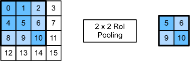
Capa de pool de región de interés de .
A continuación, mostramos el cálculo de la capa de pool de región de interés. Supongamos que el alto y el ancho de las características extraídas por la CNN son ambas y que hay un solo canal.
Supongamos además que la altura y el ancho de la imagen de entrada son ambos de píxeles y que la búsqueda selectiva genera dos propuestas de región en esta imagen. Cada propuesta de región se expresa como cinco elementos: su clase seguida de las coordenadas de sus esquinas superior izquierda e inferior derecha.
Código Python · celda 31
rois=torch.Tensor([[0,0,0,20,20],[0,0,10,30,30]])
Debido a que la altura y el ancho de son del alto y ancho de la imagen de entrada, las coordenadas de las dos propuestas de regiones son multiplicadas por de acuerdo a lo especificado en el argumento spatial_scale. Luego, estas dos regiones de interés son marcadas en como y , respectivamente. Finalmente, en el pool de región de interés de , cada región de interés se divide en una grilla de subventanas para extraer más características de la misma dimensión .
El modelo es optimizado para una pérdida combinando dos tareas (clasificación y localización). Sean:
, la etiqueta de clase verdadera, ; por convención, la clase de fondo general tiene .
, la distribución de probabilidad discreta (por Rol) sobre clases: , calculada por una softmax sobre las salidas de una capa totalmente conectada.
, el cuadro delimitador de verdad .
, la corrección del cuadro delimitador predicha, .
La función de pérdida resume el costo de la clasificación y la predicción del cuadro delimitador: . Para el "fondo" Rol, es ignorado por el indicador de función , definido como:
Luego, la función de pérdidad global es:
La pérdida del cuadro delimitador debe medir la diferencia entre y usando una función de pérdida robusta. En este caso, se adopta la pérdida uniforme de (smooth L1 loss) y se afirma que es menos sensible a los valores atípicos.
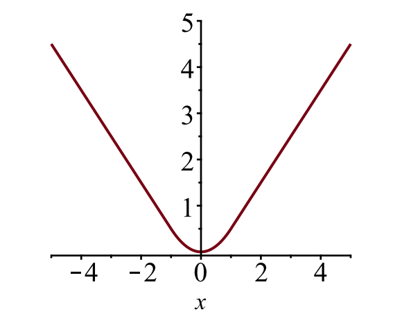
Gráfica de la pérdida uniforme de , . Imagen tomada de \cite{weng2017detection1}.
1.8.3 R-CNN más Rápida (Faster R-CNN)
Para ser más precisos en la detección de objetos, el modelo de R-CNN rápida usualemente tiene que generar una cantidad significativa de propuestas de regiones en la búsqueda selectiva. Para reducir las propuestas de regiones sin pérdida de la precisión, la R-CNN más rápida reemplaza la búsqueda selectiva con una red de propuesta de región.
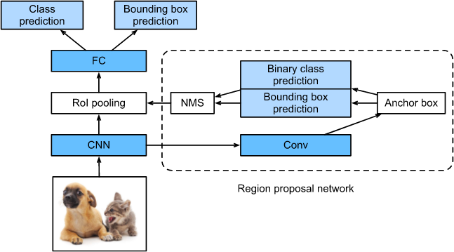
Modelo de la R-CNN más rápida.
Este modelo solo cambia el método de propuesta de región de búsqueda selectiva a una red de propuesta de región. El resto del modelo permanece sin cambios. El funcionamiento de la red de propuestas de región se describe a continuación:
Se usa una capa convolucional de con padding para transformar la salida de la CNN en una nueva salida con canales. De esta manera, cada unidad a lo largo de las dimensiones espaciales de los mapas de características extraídos de la CNN obtinen a nuevo vector de características de longitud .
Centrado en cada píxel de los mapas de características, se generan múltiples cajas ancla de diferentes escalas y relaciones de aspectos y se los etiquetan.
Usando el vector de característica de longitud en el centro de cada caja ancla, se predice la clase binaria (fondo o objetos) y el cuadro delimitador para esta caja ancla.
Se considera los cuadros delimitador predichos cuyas clases predichas son objetos. Luego, se eliminan los resultados superpuestos utilizando la supresión no máxima (non-maximum suppression - nms). Los cuadros delimitadores restantes para los objetos son las propuestas de regiones requeridas para la capa de pooling de la región de interés.
Cabe destacar que, como parte del modelo de la R-CNN más rápida, la red de propuesta de región es conjuntamente entrenada con el resto del modelo. Es decir, la función objetivo de las R-CNN más rápida incluye no solo la clase y las predicciones de los cuadros delimitadores en la detección de objetos, sino que también la clase binaria y las predicción del cuadro delimitador de las cajas ancla en la red de región propuesta. Como resultado, la red de propuestas de regiones aprende a generar propuestas de regiones de alta calidad para mantener la precisión en la detección de objetos con un número reducido de propuestas de regiones que se aprende de los datos.
1.8.3.1 Flujo de Trabajo del Modelo
A continuación, se detalla el funcionamiento del flujo de trabajo del modelo de la R-CNN más rápida:
Preentrenar una red CNN en la tarea de clasificación de imágenes.
Ajustar la RPN (region proposal network), aplicando técnicas de transferencia de conocimiento (transfer learning, fine-tune) de extremo a extremo para la tarea de propuesta de región, que se inicializa mediante el clasificador de imágenes preentrenado. Las muestras positivas tienen un (intersection-over-union) mayor a , mientras que las muestras negativas tienen un .
* **Deslizar una pequeña ventana espacial sobre el mapa de características *conv* de toda la imagen.**
* **En el centro de cada ventana de deslizamiento, se predice múltiples regiones de varias escalas y proporciones simultáneamente. Un ancla es una combinación de (centro de ventana deslizante, escala, proporciones).**
Entrenar el modelo R-CNN más rápido, usando las propuestas generadas por el actual RPN.
Utilizar la red R-CNN rápida para inicializar el entrenamiento de la RPN. MIentras se mantiene las capas convolucionales compartidas, solo se necesita ajustar las capas específicas de la RPN.
Finalmente, se ajustan las capas únicas de la R-CNN rápida.
Los pasos y pueden ser repetidos para entrenar la RPN y la R-CNN rápida.
1.8.3.2 Función de Pérdida
La R-CNN más rápida está optimizada para una función de pérdida multitarea, similar a la R-CNN rápida. Sean:
, la probabilidad predicha de que el ancla sea un objeto.
, etiqueta de la gran verdad (binaria) si el ancla es un objeto.
, coordenadas parametrizadas predichas (cuatro).
, coordenadas de la gran verdad.
, término de normalización, establece un tamaño de minilote () según el artículo original.
, término de normalización, establece el número de ubicaciones de anclas () en el artículo original.
, parámetro de balanceo, establecido en ~ en el artículo original (de modo que los términos y tengan aproximadamente la misma ponderación).
La función de pérdida multitarea combina las pérdidas de las clasificaciones y la regresión de los cuadros delimitadores:
donde es la función de pérdida sobre dos clases, ya que podemos traducir fácilmente una clasificación de varias clases en una clasificación binaria prediciendo que una muestras es un objeto de destinto o no. es la pérdida suave de .
1.8.4 Máscara R-CNN (Mask R-CNN)
En el dataset de entrenamiento, si las posiciones de los objetos a nivel de píxel también se etiquetan en las imágenes, la máscara R-CNN puede aprovechar de manera efectiva dichas etiquetas detalladas para mejorar aún más la precisión de la detección de objetos.
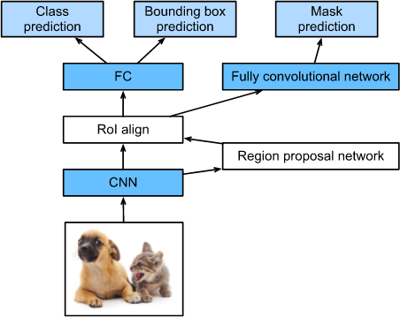
Modelo de la máscara R-CNN
Como se puede ver en la fig., la máscara R-CNN es una modificación basada en la R-CNN más rápida. Específicamente, la máscara R-CNN reemplaza la capa de pooling de la región de interés por la capa de alineamiento de la región de interés (Rol). Esta capa de región de alineamiento de región de interés usa una interpolación bilineal para preservar la información espacial en los mapas de características, lo cual es más adeacuado para la predicción a nivel de píxel.
La salida de esta capa contiene los mapas de características de la misma dimensión para todas las regiones de interés. Estos son usados para predecir no solo la clase y el cuadro delimitador para cada región de interés, sino que también la ubicación a nivel de píxel del objeto a través de una red completamente convolucional.
1.8.4.1 Rol Align
Debido a que la segmentación a nivel de píxel requiere una alineación mucho más detallada o final que los cuadros delimitadores, la máscara R-CNN mejora la capa de Rol (denominada "capa RolAlign") para que el Rol se pueda asignar mejor y con mayor precisión a las regiones de la imagen original.
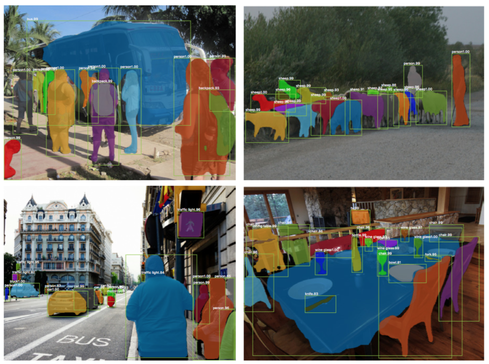
Predicciones de la máscara R-CNN sobre el dataset de prueba COCO. Fig. tomada de \cite{weng2017detection1}.
La capa de RolAlign es diseñada para corregir la desalineación de la ubicación causada por la cuantificación en el pooling Rol. RolAlign elimina la cuantificación hash, por ej., usando en lugar de , para que las características extraídas puedan ser alineadas correctamente con los píxeles de entrada. La interpolación bilineal se utiliza para calcular los valores de ubicación de coma flotante en la entrada.
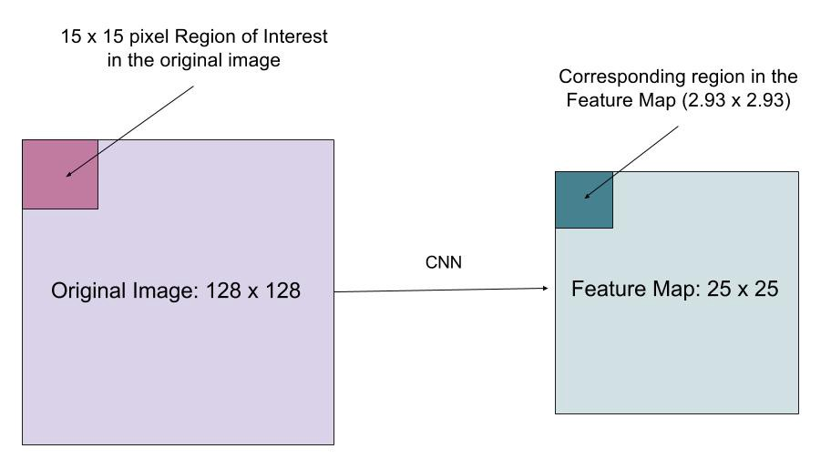
Una región de interés se mapea con precisión desde la imagen original al mapa de características sin redondear a números enteros. Fig. tomada de \cite{weng2017detection1}.
1.8.4.2 Función de Pérdida
La función de pérdida multitarea de la Máscara R-CNN combina la pérdida de la clasificación, la ubicación y la máscara de segmentación: donde y son las mismas que en la R-CNN más rápida.
Las ramas de la máscara agenera una máscara de dimensión para cada RoI y clase; clases en total. Por lo tanto, el total de salidas es de tamaño . Debido a que el modelo está tratando de aprender una máscara para cada clase, no hay competencia entre las clases para la generación de máscaras.
se define como la pérdida de entropía cruzada binaria promedio, quer solo incluye la ésima máscara si la región está asociada con la clase de la gran verdad .
donde es la etiqueta de la celda en la máscara de verdad de la región de tamaño ; es el valor predicho de la misma celda en la máscara aprendida para la clase de la gran verdad .
1.9 Sólo se mira una vez (You Only Look Once - YOLO)
El modelo YOLO \cite{redmon2016you} es el primer intento de contruir un detector de objetos rápido en tiempo real. Debido a que YOLO no se somete al paso de propuesta de región y solo predice sobre un número limitado de cuadros delimitadores, puede hacer inferencias mucho más rápido.
1.9.1 Flujo de Trabajo
A continuación, se describe el flujo de trabajo para YOLO:
Preentrenar una red CNN en la tarea de clasificación de imágenes.
Dividir una imagen en celdas. Si el centro de un objeto cae en una celda, esa celda es "responsable" de detectar la existencia de ese objeto. Cada celda predice: (a) la ubicación de los cuadros delimitadores ; (b) una puntuación de confianza y (c) una probabilidad condicionada de la clase de objeto en la existencia de un objeto en el cuadro delimitador.
* **Las coordenadas** del cuadro delimitador son definidas por un túpla de valores, **(coordenada centro, coordenada centro, ancho, alto), es decir, , donde e están configurados para desplazar la ubicación de una celda. Además, y son normalizados por el ancho y el alto de la imagen, y por lo tanto, están en el rango de .**
* **Una puntuación de confianza** inde la **probabilidad de que la celda contenga un objeto: Pr(contener un objeto) x IoU(predicción, gran verdad); donde Pr es la probabilidad y es la intersección sobre la unión.**
* **Si la celda contiene un objeto, esta predice una probabilidad de que ese objeto pertenezca a cada clase : Pr(el objeto pertenezca a la clase C_i | contiene un objeto). En esta etapa, el modelo solo predice un conjunto de probabilidades de clase por celda, independientemente del número de cuadros delimitadores, .**
* **En total, una imagen contiene cuadros delimitadores, cada cuadro se corresponde a predicciones de ubicación, puntaje de confianza y probabilidades condicionales para la clasificación de objetos. Los valores de predicción para una imagen son , que es la forma de tensor de la capa convolucional final del modelo.**
La capa final de la CNN preentrenada es modificada para generar un tensor de predicción de tamaño .
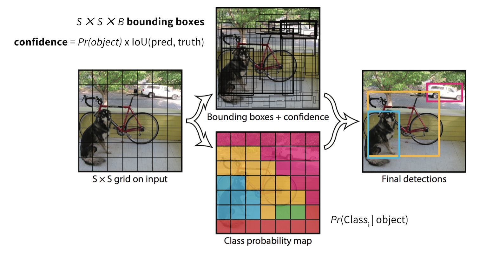
Flujo de trabajo del modelo YOLO. Fig. tomada de \cite{weng2017detection1}.
1.9.2 Aquitectura de la red
La base del modelo es similar al modelo GoogLeNet con el módulo Inception reemplazado por capas convolucionales y . La predicción final es de dimensión se produce por dos capas completamente contectada en el todo el mapa de características convolucional.
La arquitectura tiene capas convolucionales seguidas de dos capas completamente conectadas.
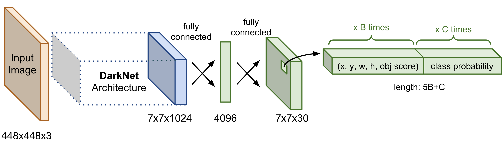
Arquitectura de YOLO. Fig. tomada de \cite{weng2017detection1}.
1.9.3 Función de Pérdida
La función de pérdida consiste en dos partes: (1) la pérdida de localización para la predicción del desplazamiento del cuadro delimitador y (2) la pérdida de la clasificación para las probabilidades de clase condicional.
Ambas partes son calculadas como la suma de los errores cuadráticos. Se utilizan dos parámetros de escala para controlar cuánto se quiere aumentar la pérdida de las predicciones de las coordenadas del cuadro delimitador () y cuanto se quiere disminuir las predicciones de puntuación de pérdida de confianza para las cajas sin objetos (). Es importante reducir la pérdida aportada por los cuadros de fondo, ya que la mayoría de los cuadros delimitadores no implican ninguna instancia. En el artículo original, se establecen: y .
Además, en el artículo original, la función de pérdida usa en lugar de como puntuación de confianza. Esta acotación está tomada de la siguiente observación: cada cuadro delimitador debe tener su propia puntuación de confianza.
, es una función indicadora de si la celda contiene un objeto.
, indica si el cuadro delimitador ésimo de la celda es "responsable" de la predicción del objeto. (ver fig. de abajo).
, la puntuación de confianza de la celda , Pr(contener un objeto) * (pred, verdad).
, la puntuación de confianza predicha.
, el conjunto de todas las clases.
, la probabilidad condicional de si la celda contiene un objeto de la clase .
, la probabilidad de clase condicional predicha.
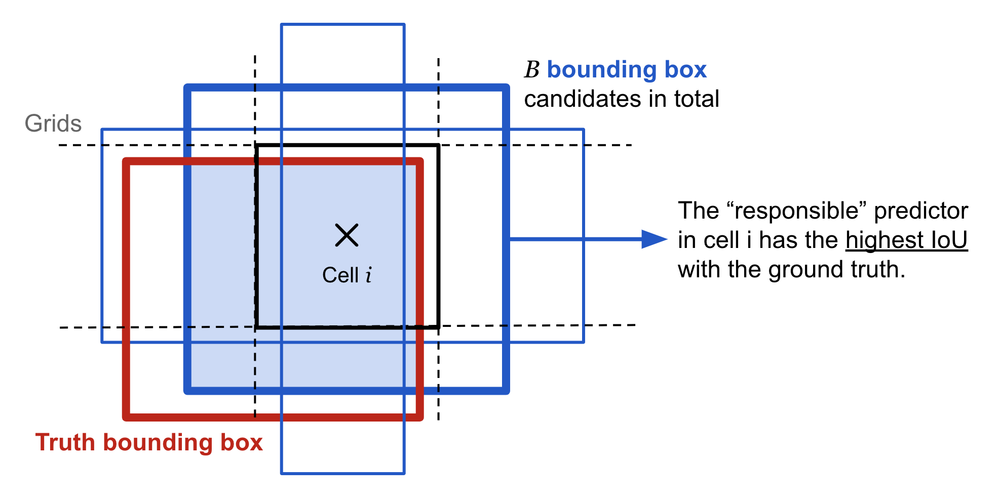
En una ubicación, en la celda , el modelo propone candidatos de cuadros delimitadores y el que tiene más superposición con respecto a la gran verdad es el predictor "responsable". Fig. tomada de \cite{weng2017detection1}.
La función de pérdida solo penaliza el error de clasificación si un objeto está presente en la celda de la grilla, . También solo penaliza el error de coordenadas del cuadro delimitador si ese predictor es "responsable" del cuadro de la gran verdad, .
Como detector de objetos de una etapa, YOLO es considerablemente rápido, pero no es bueno para reconocer objetos de forma irregular o un grupo de objetos pequeños debido a un número limitado de candidatos de cuadros delimitadores.
1.10 YOLOv2 / YOLO9000
El modelo YOLOv2 \cite{redmon2017yolo9000} es una versión mejorada de YOLO. YOLO9000 está construido sobre YOLOv2 pero entrenado con un dataset que combina el dataset de detección COCO y las 9000 clases principales de ImageNet.
1.10.1 YOLOv2
Se aplican una variedad de modificaciones para hacer que la predicción de YOLO sea más precisa y rápida, que incluyen:
BatchNorm: añade una normalización por lotes (cada vez que nos referimos a batch normalization lo haremos usando la siguiente abreviatura: bn) en todas las capas convolucionales, lo que lleva a una mejora significativa sobre la convergencia.
Importancia de la resolución de la imagen: aplicando la técnica de transferencia de conocimiento (fine-tuning) del modelo base con imágenes de alta resolución mejora el rendimiento en la detección.
Detección de cajas ancla convolucional: en lugar de predecir las posiciones de los cuadros delimitadores usando capas completamente conectada sobre todo el mapa de características, YOLOv2 utiliza capas convolucionales para predecir las ubicaciones de las cajas ancla, como en una R-CNN más rápida. La predicción de las ubicaciones espaciales y las probabilidades de clase están desacopladas. En general, el cambio conduce a una ligera disminución en , pero a un aumento en la memoria.
Agrupamiento de mean de las diferentes dimensiones de caja; a diferencia de la R-CNN más rápida que utiliza tamaños de cajas ancla seleccionados a mano, YOLOv2 ejecuta el agrupamiento de mean en los datos de entrenamiento para encontrar las dimensiones de la caja ancla. La métrica de la distancia está diseñada para depender de las puntuaciones de :
donde es un candidato de cuadro de la gran verdad y es uno de los centroides. El número de centroides (cajas ancla) se puede elegir mediante el método de elbow.
Las cajas anclas generadas por el agrupamiento proporcionan una mejor promedio condicionada a un número fijo de cajas.
Predicción de ubicación directa: YOLOv2 formula la predicción del cuadro delimitador de manera que no debería diverga demasido de la ubicación central. Si la predicción de la ubicación de la caja puede colocar la caja en cualquier parte de la imagen, como en la RPN, el entrenamiento del modelo podría volverse inestable.
Dada una caja ancla de tamaño en la celda de la grilla con su esquina superior izquierda , el modelo predice el desplazamiento y la escala, y el cuadro delimitador predicho correspontiene tiene centro y tamaño . La puntuación de confianza es la función sigmoide de otra salida.
Predicción de la ubicación del cuadro delimitador en el modelo YOLOv2. Fig. tomada de \cite{weng2017detection1}.
Se agregan características detalladas (fine-grained features): YOLOv2 agrega una capa de paso para traer las características detalladas de una capa anterior a la última capa de salida. El mecanismo de esta capa de paso es similar a las asignaciones de identidad del modelo ResNet para extraer las características de mayor dimensión de las capas anteriores. Esto conduce a un aumento del rendimiento del .
Entrenamiento Multiescala: para entrenar el modelo para que sea más robusta a imágenes de entrada de tamaños diferentes, se muestrea aleatoriamente un nuevo tamaño de dimensión de entrada cada lotes. Dado que las capas convolucionales de YOLOv2 reducen la muestra de la dimensión de entrada por un factor de , el nuevo tamaño muestreado es un múltiplo de .
Modelo base ligero: para que las predicciones sean más rápidas, YOLOv2 adopa un modelo base ligero, DarkNet-19, que tiene capas convolucionales y capas de max-pooling. El punto clave es insertar una avg-pool y filtros convolucionales entre capas convolucionales .
1.10.2 YOLO9000
Debido a que dibujar cuadros delimitadores en imágenes para la detección de objetos es computacionalmente costos que etiquetar las imágenes para su clasificación, el artículo origanl propone una forma para combinar un datset de detección de objetos pequeño con un dataset grande como ImageNet. El nombre YOLO9000 proviene de las clases principales de ImageNet. Durante el entrenamiento conjunto, si una imagen de entrada viene del dataset de clasificación, solo retropropaga la pérdida de la clasificación.
El dataset de detección tiene muchas menos etiquetas y más generales, ademas, las etiquetas cruzan múltiples datasets que a menudo no se exluyen mutuamente. Por ej., ImageNet tiene la etiqueta "Persian cat" mientras que en COCO la misma imagen puede ser etiquetada como "cat". Sin exclusividad mutua, no tiene sentido aplicar softmax sobre todas las clases.
Para realizar una mezcla eficiente de las etiquetas de ImageNet (1000 clases, de grano fino) con COCO/PASCAL ( clases, grano grueso), YOLO9000 construye una estructura de árbol jerárquico con referencia a WordNet para que las etiquetas generales estén más cerca de la raíz y las etiquetas de clase detalladas sean las hojas. De esta forma, "cat" es el nodo padre de "Persian cat".
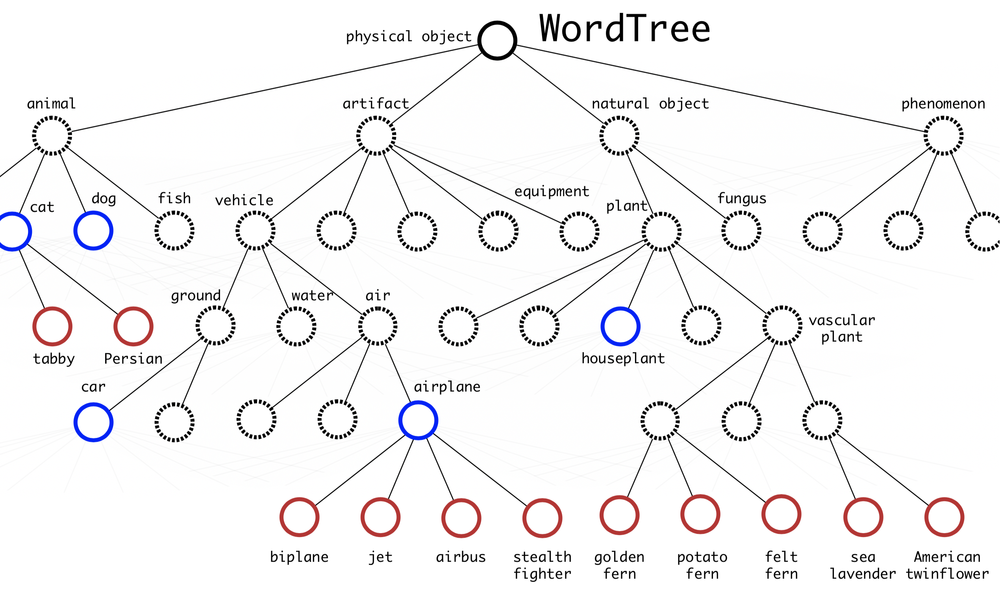
La jerarquía de WordTree combina etiquetas de COCO e ImageNet. Los nodos azules son etiquetas de COCO y los nodos rojos son etiquetas de ImageNet. Fig. tomada de \cite{weng2017detection1}.
Para predecir la probabilidad de un nodo de clase, podemos seguir el camino desde el nodo hasta la ráiz:
Pr("persian cat" | contain a "physical object") = \
Pr("persian cat" | "cat")
Pr("cat" | "animal")
Pr("animal" | "pysical object")
Pr(contain a "physical object") # puntuación de confianza
Cabe destacar que Pr(contain a "physical object")es la puntuación de confianza predecida por separado en la estructura de pipeline de cuadro delimitador. El camino de la predicción de la probabilidad condicional puede detenerse en cualquier paso, según las etiquetas disponibles.
1.11 RetinaNet
El modelo de RetinaNet \cite{lin2017focal} es un detector de objetos denso de una etapa. Dos bloques de construcción cruciales son: (1) la pirámide de imágenes destacada y (2) el uso de la pérdida focal.
La pirámide de imágenes se basa en la idea intuitiva de que mapas de características de grano fino grandes en niveles anteriores son buenos para captura objetos pequeños y los mapas de características de grano grueso pequeños pueden detectar bien objetos grandes.
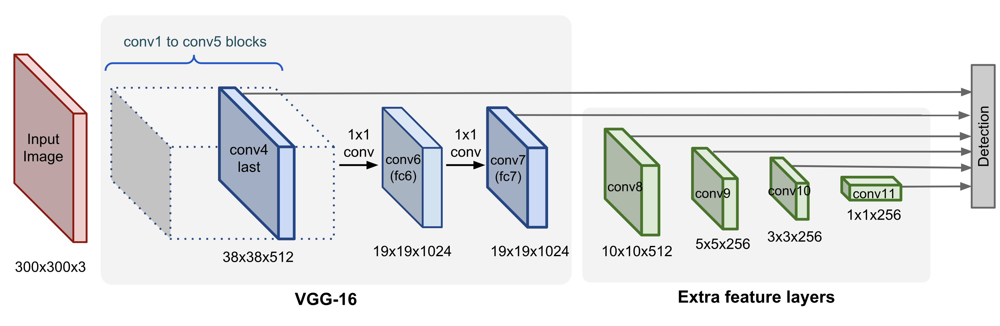
Ejemplo de pirámide de imágenes del modelo SSD (previamente descrito), donde la detección ocurre en cada capa piramidal, apuntando a objetos de varios tamaños. Fig. tomada de \cite{weng2017detection1}.
1.11.1 Pérdida Focal (Focal Loss)
Un problema para el entrenamiento de los modelos de detección de objetos es un desequilibrio extremo entre el fondo que no contiene ningún objeto y el primer plano que contiene objetos de interés. La pérdida focal está diseñada para asignar más peso a ejemplos "duros" que se clasifican erróneamente fácilmente (es decir, fondo con textura ruidosa u objetos parciales) y para reducir el peso de los ejemplos fáciles (es decir, fondo obviamente vacío).
Comenzando con una pérdida de entropía cruzada normal para una clasificación binaria,
donde es una etiqueta de la gran verdad, indicando si un cuadro delimitador contiene un objeto, y es la probabilidad predicha de objetividad (también conocida como puntuación de confianza).
Por conveniencia de notación, sea
Los ejemplos fácilmente clasificables con grande, es decir, cuando está muy cerca de (cuando ) o (cuando y=1), pueden incurrir en una pérdida de magnitud no trivial. La pérdida focal agrega explícitamente un factor de ponderación para cada término en la entropía cruzada, de modo que el peso es pequeño cuando es grande y, por lo tanto, los ejemplos fáciles se ponderan hacia abajo.
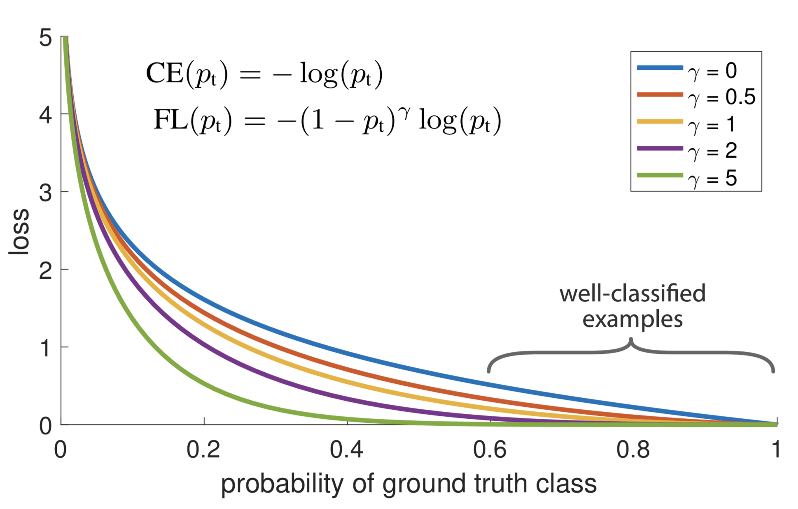
La pérdida focal se centra menos en ejemplos sencillos con un factor de . Fig. tomada de \cite{weng2017detection1}.
Para un mejor control en la dimensión de la función de ponderación, RetinaNet usa una variante de pérdida focal balanceada en , donde y funcionan mejor,
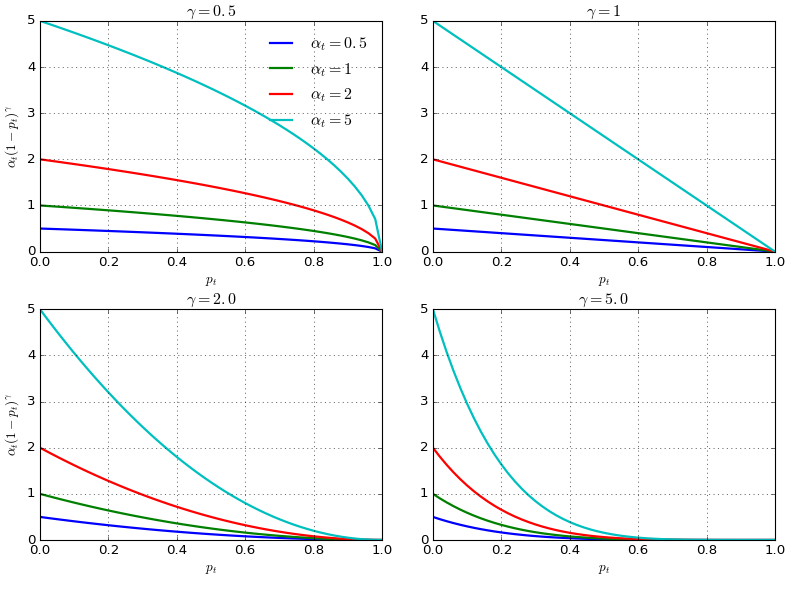
Gráfico de los pesos de la pérdida focal en función de dados diferentes valores de y . Fig. tomada de \cite{weng2017detection1}
1.11.2 Pirámide de Imágenes Destacadas
La Pirámide de Imágenes Destacadas \cite{lin2017feature} es la red principa de RetinaNet. Siguiendo el mismo enfoque de la pirámide en SSD, las pirámides destacadas proporcionan un componente de visión básico para la detección de objetos a diferentes escalas.
La idea principal de la red de pirámide destacada se muestra en la fig. de abajo. La estructura base contiene una secuencia de niveles de pirámides, cada uno correspondiente a una etapa de la red. Una etapa contiene múltiple capas convolucionales del mismo tamaño y los tamaños de las estapas se reducen por un factor de . Sea la última capa de la ésima etapa como .
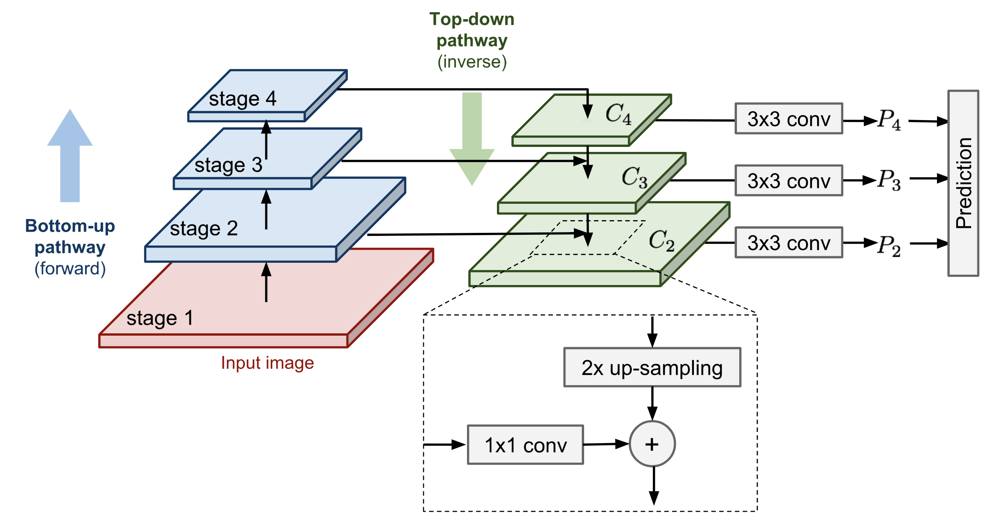
Pirámide de Imágenes destacadas. Fig. tomada de \cite{weng2017detection1}.
Dos vías conectan las capas convolucionales:
Camino de abajo hacia arriba: es el cálculo hacia adelante normal.
Camino de arriba hacia abajo: va en dirección inversa, agregando mapas de características semánticamente más fuertes de regreso a los niveles de pirámide anteriores de un tamaño más grande a través de conexiones laterales.
* **Primero, las características de un nivel más alto se muestrean espacialmente más gruesas para que sean veces más grandes. Para la mejora de la imagen, el artículo original utiliza el muestreo superio del vecino más cercano. Si bien existen muchos algoritmos de escalado de imágenes, como el uso de la deconvolución, la adopción de otro método de escalado de imágenes podría o no mejorar el rendimiento de RetinaNet.**
* **El mapa de características más grande se somete a una capa de convolución de para reducir la dimensión del canal.**
* **Finalmente, estos dos mapas de características se mezclan mediante la agregación de elementos inteligente.**
* **Las conexiones laterales solo ocurren en la última capa en las etapas, denotado como , y el proceso continúa hasta que se genera el mapa de características combinado más fino (más grande). La predicción se realiza a partir de cada mapa mezclado después de una capa de convolución de , .**
Según los estudios, el rango de importancia de los componentes del diseño piramidal de la imagen destacada es el siguiente: conexión lateral detección de objetos en varias capas enriquecimiento de arriba hacia abajo representación piramidal (en comparación con comprobar solo la capa más fina).
1.11.3 Arquitectura del Modelo
La pirámide destacada se construye sobre la arquitectura ResNet. Donde ResNet tiene bloques convolucionales ( etapas de red -niveles de pirámide-). La última capa del ésimo nivelo, , tiene una resolución más baja que la dimensión de entrada sin procesar.
RetinaNet utiliza los niveles de pirámide de características a :
a son calculados de la etapa residual correspondiente a ResNet de a . Estos están conectados por vías de arriba hacia abajo y de abajo hacia arriba.
se obtiene a través de una convolución , stride en la parte superior de .
aplica la función de activación ReLU y una convolución de , stride en la parte superior de .
Añadiendo niveles piramidales más altos sobre ResNet mejora el rendimiento para la detección de objetos más grandes.
Al igual que en la arquitectura SSD, la detección ocurre en todos los niveles de la pirámide al hacer una predicción a partir de cada mapa de características combinado. Debido a que las predicciones comparten el mismo clasificador y el regresor de caja, todas se forman para tener la misma dimensión de canal .
Hay cajas ancla por nivel:
El tamaño base corresponde a las áreas de a píxeles en a respectivamente. Hay tres relaciones de tamaños: .
Para cada tamaño, hay tres relaciones de aspectos: .
Como es habitual, para cada caja ancla, el modelo genera una probabilidad de clase para cada una de las clases en la clasificación de la subred y retrocede el desplazamiento desde la caja ancla al objeto de la gran verdad más cercana en la subred de la caja de regresión. La subred de clasificación adopta la pérdida focal (vista anteriormente).
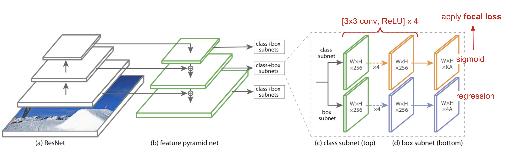
Arquitectura del modelo RetinaNet que utiliza una red troncal FPN sobre ResNet. Fig. tomada de \cite{weng2017detection1}.
1.12 YOLOv3
YOLOv3 se crea aplicando técnicas de diseño de YOLOv3. La lista de mejoras se muestra a continuación:
Regresión logística para las puntuaciones de confianza: YOLOv3 predice una puntuación de confianza para cada cuadro delimitador usando la regresión logística, mientras que YOLO y YOLOv2 usan la suma de los errores al cuadrado para los términos de clasificación. La regresión lineal de la predicción del desplazamiento conduce a una disminución de mAP.
No más softmax para la predicción de clase: cuando se predice la confianza de clase, YOLOv3 utiliza clasificadores logísticos independientes múltiples para cada clase en lugar de una sola capa softmax. Esto es una mejora notable, especialmente cuando se considera que una imagen puede tener múltiples etiquetas y no se garantiza que todas las etiquetas sean mutuamente excluyentes.
DarkNetResNet como el modelo base: el nuevo modelo de DarkNet-53 todavía se base en capas convolucionales sucesivas de y , al igual que la arquitectura DarkNet original, pero se le agregan bloques residuales.
Predicción multiescala: inspirado en la pirámide de imágenes, YOLOv3 agrega varias capas convolucionales después del modelo extractor y hace predicciones en tres escalas diferentes entre estas capas de convolución. De esta manera, tiene que lidear con muchos más candidatos a cuadros delimitadores de varios tamaños en general.
Concatenación de salto de capa: YOLOv3 también agrega conexiones cruzadas entre dos capas de predicción (excepto para la capa de salida) y los mapas de características anteriores. El modelo primero toma muestras de los mapas de características gruesas y luego las mezcla con las características anteriores mediante la concatenación. La combinación con información de grano más fino lo hace mejor para detectar objetos pequeños.
Como dato curioso, la pérdida focal no ayuda a YOLOv3, posiblemente se deba al uso de y , ya que estos incrementan la pérdida de las predicciones de las ubicaciones de los cuadros delimitadores y disminuyen la pérdida de las predicciones de confianza para las cajas de fondo.
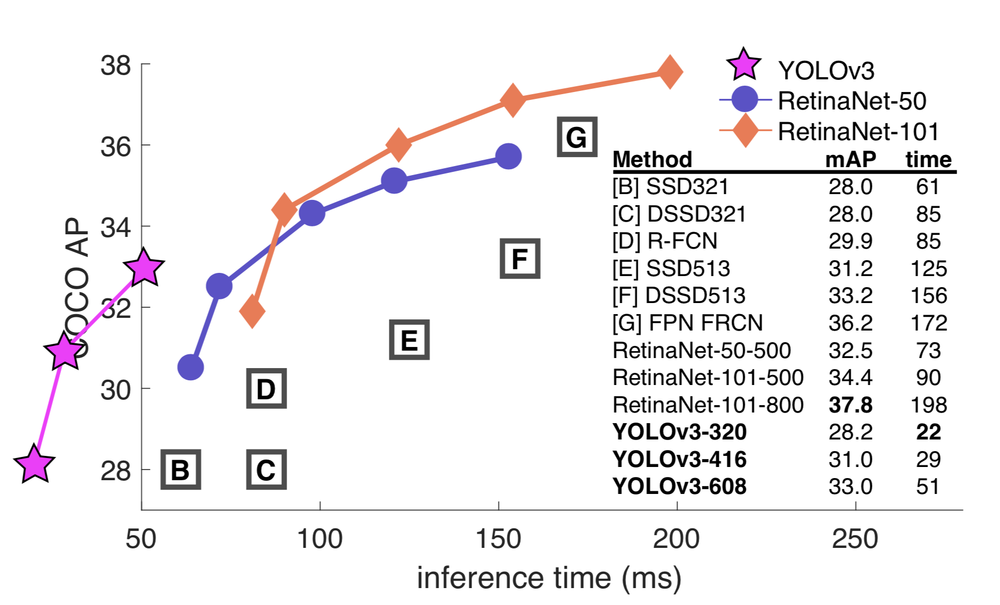
Comparación de varios modelos rápidos de detección de objetos y el rendimiento mAP. Fig. tomada de \cite{weng2017detection4}.